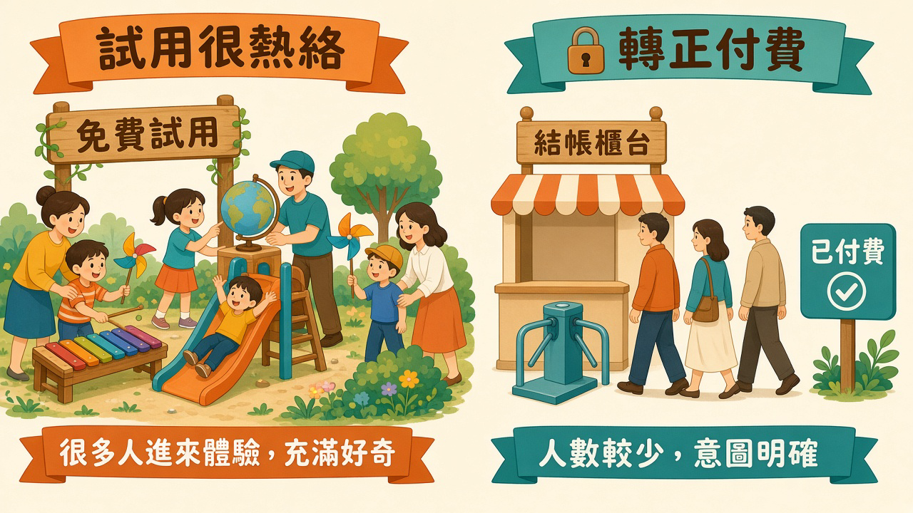
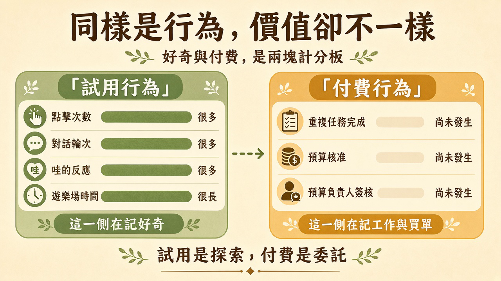
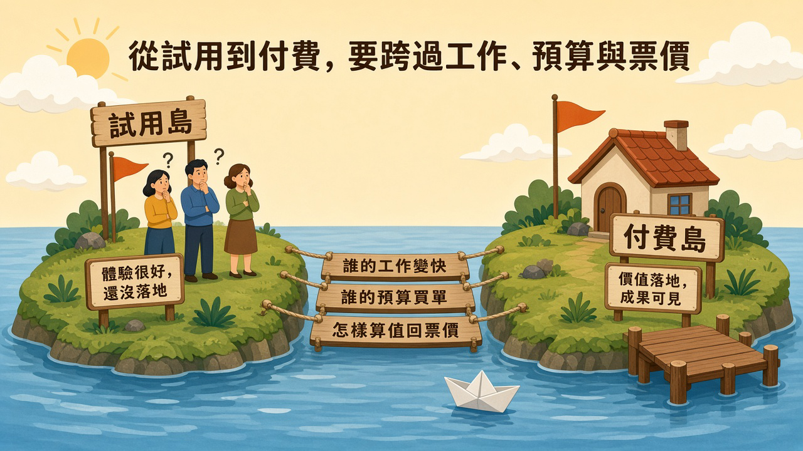

試用區常常像週末市集：人擠在一起，對話一直往下長，計分板上的紀錄也好看。走到轉正付費那一關，隊伍卻安靜下來。標題裡的「掉一半」，是很多人形容這種落差時的口語印象。本文沒有查核行業轉換率，也不引用未查核的市場數字。要看的是兩份紀錄：試用時被記下來的行為，和付費時要做的決定。
閱讀說明：本文為編輯依常見產品試用與轉正實務整理的科普短文，非整理自單一節目或供應商白皮書。標題「掉一半」是口語印象，不是已查核的行業轉換率。文中不引用未查核的市場數字，也不提供轉換率保證。
功能一開放試用，團隊很容易先看見熱絡。有人點進來，有人把對話繼續往下送，有人在群組裡留一句「哇，這個可以」。待在試用區的時間也在累積。這些紀錄都是真的。它們回答的是：有人好奇，而且願意花時間玩。
轉正付費安靜，常常是因為付費要另外做幾件試用計分板沒有在記的事。要指出誰的工作會變快，找到願意用自己預算買單的人，還要寫下怎樣才算值回票價。玩得很開心的人，和能拍板的人，常常是兩位。拍板的人若在試用結束前還沒被請到桌邊，熱絡就會停在試用區。
茶水間的新點心，第一天會被拿光，群組也會出現好評。要把同一款點心改成每週固定採購，行政還是得問：誰真的會再吃、預算掛在哪個部門、怎樣算沒有浪費。試吃的熱鬧，還沒有填完採購單上的三行。

插圖：白話科技編輯繪製／AI 輔助，非新聞照片
熱絡指標可以繼續留著。它告訴你試用區有沒有人來。付費意圖要另開一本紀錄：誰把試用用進自己的工作、誰說得出預算在哪裡、成功長什麼樣子。兩本紀錄都值得看。把它們收成同一個「很熱絡」的總分，轉正為什麼安靜就會變成一句說不清的感覺。標題那種「掉一半」的口語，往往就是從這裡來的。
熱絡指標與付費意圖是兩份紀錄。一份在數好奇。一份在問有沒有人準備為結果負責。安靜的那一關，要回到第二份紀錄裡找，而不是把第一份的熱鬧再加總一次。
試用行為很好數，因為它發生在產品裡，而且當下就有訊號。點擊、對話輪次、一聲「哇」、待在遊樂場的時間，都屬於這一側。它們適合回答：這次試用有沒有被打開、有沒有人願意多試一步、哪一個示範最容易引起注意。
這些紀錄升高，代表探索在發生。探索是之後合作的種子，值得被留下來。它還沒有變成委託。委託是另一種行為：有人把自己的工作交給這個功能，並準備為結果負責。
付費行為要能回答三句，而且三句都要有叫得出名字的人。
誰的工作變快。要指出某一類任務，在試用裡真的少花了時間，或少返工一次。變快的工作最好是試用者自己每週會再做的那種。只在示範裡出現一次的驚嘆，還停在好奇。
誰的預算買單。試用常常由想試試看的人開啟。付費要找到預算掛在誰身上：這個團隊的工具預算、某個專案的預算，或已經在付的方案裡還有沒有空間。找不到這個人，熱絡會停在「我們很喜歡」。
怎樣算值回票價。試用結束時要有一句雙方都認得的成功：哪一項任務完成、用什麼方式檢查、做到什麼程度才值得這個團隊繼續付。這句話若留到試用結束後才補，兩邊會用當時的好心情代替驗收。
公司開放日，入口手環在數有多少人進過展示間。採購單在問下季要不要續約。兩張紙可以同時存在。把手環數量抄進採購單的效益欄，簽名的人仍然不知道哪一項工作會變快。

插圖：白話科技編輯繪製／AI 輔助，非新聞照片
橋的第一塊板是測量。試用路徑繼續記點擊、對話輪次、遊樂場時間。另外開一組付費意圖事件：有人把功能用進一件真實任務、有人指出預算負責人、有人寫下成功定義、有人在試用結束前約了轉正對話。兩組事件分開看，熱絡才不會蓋過安靜的那一側。
付費意圖事件可以先不帶金額。能記下「這次試用有沒有出現這四件事」，就已經比只有一個參與度總分更接近付費決定。金額、方案與合約條件，留到這四件事有著落之後再談。
第二塊板是人。試用名單上最活躍的人，不一定是預算負責人。這週做得到的，是請試用裡最常把功能用進工作的人，指出預算在誰那裡，並約一次短談，只談兩句：哪一項工作變快了，怎樣算值回票價。公司要不要追加一整年的採購額度，不是這一步的前提。沒有叫得出名字的人，就先標成「目前還沒有人能拍板」。
成功定義要短到能放進試用頁。例如寫成：指定的每週任務有初稿，負責人簽核後才送出。任務名稱由這個團隊自己定。寫不出任務名稱的成功，還停留在「哇」。
第三塊板是時間。轉正條件要在試用結束前出現在產品路徑裡。路徑上可以有一個清楚的步驟：確認工作、確認預算負責人、確認成功定義。三項都勾了，才進入付費或續用申請。缺一項，畫面就停在缺的那一項，並寫出還要找誰。
這樣安靜就有了位置。它變成三塊板裡哪一塊還沒有人走過，而不是一句「人變少了」的感覺。
展覽最後一天，攤位要決定要不要改成長期櫃位。燈關掉之後再回想人潮，三行條件已經沒有人可以當場補。撤攤前把工作、預算、怎樣算值回票價寫在櫃位旁，缺的那一行就還看得到。

插圖：白話科技編輯繪製／AI 輔助，非新聞照片
以下是編輯根據本文延伸的實務建議，不是講者原話，也不是已驗證的研究結論。
把試用漏斗事件和付費意圖事件分開觀測。點擊、對話輪次、遊樂場停留，歸在試用行為。真實任務被完成、預算負責人被指名、成功定義被寫下、轉正條件被勾選，歸在付費意圖。兩組各自留欄，不要收成同一個參與度。
把轉正條件寫進產品路徑。試用結束前，路徑要讓人勾選：哪一項工作變快、預算負責人是誰、怎樣算值回票價。缺的項目留在畫面上，並記到這次試用。
為這次試用定義成功任務。成功是一項具名任務被做完，而且有人願意用它作為是否續用的依據。定義寫在事件旁邊，之後才知道付費意圖事件有沒有發生。
選一個正在試用的功能，列出目前看得到的事件，分成「試用行為」和「付費意圖」兩欄。若付費意圖欄是空的，補上三個事件名稱：真實任務完成、預算負責人被指名、成功定義被儲存。驗收方式：同事能指著同一份清單，說出哪一欄只代表好奇、哪一個事件才代表有人準備為結果負責。這是這週的清單試驗，不能推成轉換率。
以下是編輯根據本文延伸的實務建議，不是講者原話，也不是已驗證的研究結論。
先問預算在誰身上，再談要不要轉正。請試用裡實際把功能用進工作的人，指出預算負責人。負責人若在別的團隊，這週的行動是約到對話。這一步不代替公司決定要不要追加採購額度。
用一句話說怎樣算值回票價。和預算負責人一起寫下：哪一項工作變快、用什麼方式檢查、做到什麼程度才值得這個團隊繼續付。寫不出檢查方式，就還停在試用好評。
把轉正對話放在試用結束前。對話只談三件事：工作、預算、成功定義。熱絡可以留在紀錄裡。轉正條件要在試用還開著的時候寫下來。
約試用中最常使用的一位同事，寫下三行：誰的工作變快、預算負責人姓名或「目前還沒有人能拍板」、怎樣算值回票價。驗收方式：三行都寫在試用紀錄裡，而且預算那一行要麼是具名的人，要麼明確標成尚未找到。這三行不補未經查核的轉換率或節省金額。
熱絡可以是真的。轉正安靜的時候，先看三塊板哪一塊還沒有人走過。
本文為編輯依常見產品試用與轉正實務整理的科普短文，非整理自單一節目或供應商白皮書，也不冒充研究結論。標題「掉一半」是口語印象，不是已查核的行業轉換率。文中不引用未查核的市場數字或轉換率保證。延伸閱讀連回本站姊妹篇，供對照計價單位、代理人是否做了工作，以及真實使用回饋如何累積成不容易複製的優勢。